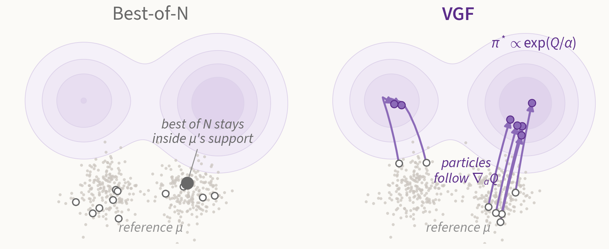
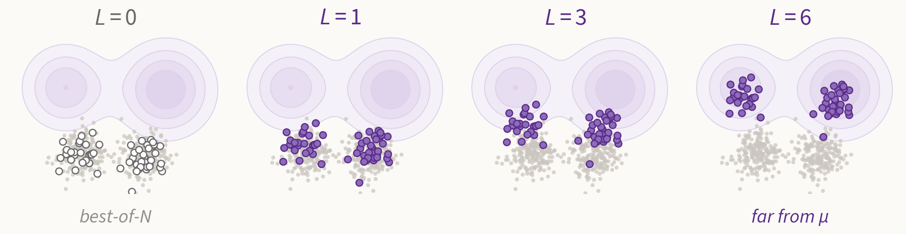
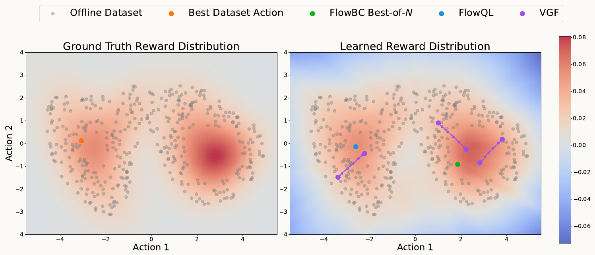
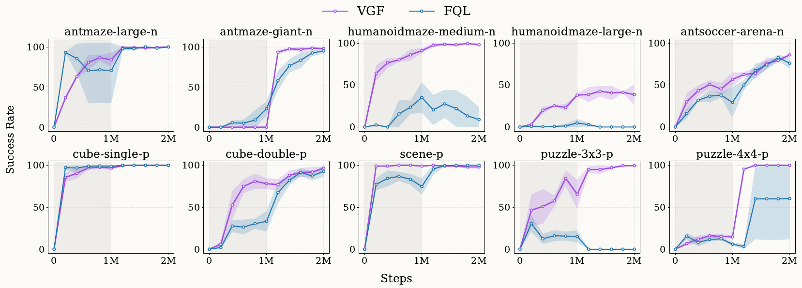
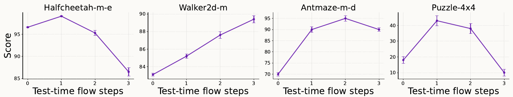

1UT Austin 2UC Berkeley/ICLR 2026/* equal contribution
VGF casts behavior-regularized RL as optimal transport from the reference distribution to the value-induced optimal policy. Particles drawn from the reference policy follow value gradients for a few steps, and the transport budget is the regularization: no explicit penalty, and no policy network to backpropagate through.

Offline RL must stay near the dataset to avoid erroneous out-of-distribution extrapolation, and LLM RL finetuning must stay near the base model to avoid reward hacking. Both are instances of behavior-regularized RL with a reference distribution \(\mu\) and a differentiable value \(R\) (a Q-function or a reward model):
$$\pi^* = \arg\max_\pi\ \mathbb{E}_{s\sim\mathcal{D},\,a\sim\pi(\cdot|s)}\big[R(s,a)\big] \quad \text{s.t.}\quad \mathbb{E}_{s\sim\mathcal{D}}\big[M\big(\pi(\cdot|s),\mu(\cdot|s)\big)\big]\le\epsilon .$$Existing methods solve this in one of two ways, and each has its own failure mode.
Penalties are hard to scale to generative policies, and rejection is stuck inside \(\mu\)'s support.
Adding an entropy term to the objective turns the greedy max into a softmax, so the target becomes the Boltzmann distribution of the value, \(\pi^*_R(a|s) \propto \exp\big(R(s,a)/\alpha\big)\). We view behavior-regularized RL as transporting probability mass from \(\mu\) to \(\pi^*_R\), and follow the Wasserstein gradient flow of \(\mathrm{KL}(q\,\|\,\pi^*_R)\) in its discrete (JKO) form:
$$q_{k+1} = \arg\min_q\ \mathrm{KL}\big(q\,\|\,\pi^*_R\big) + \frac{1}{2h}\,W_2^2\big(q, q_k\big).$$We represent \(q_k\) by \(N\) particles in action space, initialized from \(\mu\), and restrict the velocity field to an RKHS. This gives a particle update in which value gradients do the work:
$$a_i^{(l+1)} = a_i^{(l)} + \epsilon\,\phi\big(a_i^{(l)}\big),\qquad \phi(x) = \frac1N\sum_{j=1}^N \Big[k(a_j,x)\,\nabla_{a_j}\log\pi^*_R(a_j|s) + \nabla_{a_j}k(a_j,x)\Big]$$ $$\xrightarrow{\ \text{w/o MaxEnt}\ }\ \ {\color{#5B2C8A}\frac1N\sum_{j=1}^N k(a_j,x)\,\nabla_{a_j}R(s,a_j)} .$$The first term pushes particles toward high value; the second keeps them apart and preserves multiple modes. Dropping the entropy term (\(\alpha\to 0\), with \(\alpha\) absorbed into \(\epsilon\)) leaves a kernel-smoothed value-gradient step, which is what we use in practice.

The budget controls how far the implicit policy \(\pi^L_N\) can move. If \(R\) is \(c\)-Lipschitz in the action, the distance from the reference grows at most linearly in the budget \(\epsilon L\):
$$\mathrm{MMD}^2\big(\mu,\pi^L_N\big) = \mathrm{MMD}^2\big(\pi^0_N,\pi^L_N\big) \;\le\; \frac{2\epsilon L}{\sigma\sqrt e}\Big(\frac{c}{\alpha}+\frac{1}{\sigma\sqrt e}\Big).$$Unlike rejection sampling, this constraint bounds how far the policy moves rather than where it may put mass. As a result, the implicit policy is not confined to the reference support:
$$\mathrm{supp}_\epsilon\big(\pi^L_N(\cdot|s)\big)\ \not\subseteq\ \mathrm{supp}_\epsilon\big(\mu(\cdot|s)\big).$$VGF finds the best policy within a fixed transport budget, instead of trading value against a penalty.
A 2-D bandit with a bimodal reward, where the dataset covers the low-reward regions. All three methods share the same learned reward model and the same BC flow model.

FlowQL (penalized policy gradient) is misled by errors of the learned reward. Best-of-\(N\) improves on the best dataset action but stays within the sub-optimal behavior support. VGF's particles move into the region with high ground-truth reward.
Normalized scores at the end of training, 5 seeds. Standard deviations are in the paper.
| TD3+BC | IQL | IVR | Diffusion-QL | SfBC | FQL | VGF | |
|---|---|---|---|---|---|---|---|
| halfcheetah-m | 48.3 | 47.4 | 48.3 | 51.1 | 45.9 | 55.6 | 57.1 |
| hopper-m | 59.3 | 66.3 | 75.5 | 90.5 | 57.1 | 60.6 | 97.9 |
| walker2d-m | 83.7 | 72.5 | 84.2 | 87.0 | 77.9 | 65.9 | 89.4 |
| halfcheetah-m-r | 44.6 | 44.2 | 44.8 | 47.8 | 37.1 | 48.3 | 49.1 |
| hopper-m-r | 60.9 | 95.2 | 99.7 | 101.3 | 86.2 | 50.7 | 99.0 |
| walker2d-m-r | 81.8 | 76.1 | 81.2 | 95.5 | 65.1 | 38.8 | 97.8 |
| halfcheetah-m-e | 90.7 | 86.7 | 94.0 | 96.8 | 92.6 | 102.1 | 99.1 |
| hopper-m-e | 98.0 | 101.5 | 111.8 | 111.1 | 108.6 | 76.7 | 98.3 |
| walker2d-m-e | 110.1 | 110.6 | 110.0 | 110.1 | 109.8 | 102.6 | 110.5 |
| antmaze-u | 78.6 | 85.5 | 92.2 | 93.4 | 92.0 | 96.0 | 98.0 |
| antmaze-u-d | 71.4 | 66.7 | 74.0 | 66.2 | 85.3 | 89.0 | 94.3 |
| antmaze-m-p | 10.6 | 72.2 | 80.2 | 76.6 | 81.3 | 78.0 | 89.4 |
| antmaze-m-d | 3.0 | 71.0 | 79.1 | 78.6 | 82.0 | 71.0 | 86.7 |
| antmaze-l-p | 0.2 | 39.6 | 53.2 | 46.4 | 59.3 | 84.0 | 82.5 |
| antmaze-l-d | 0.0 | 47.5 | 52.3 | 56.6 | 45.5 | 83.0 | 83.8 |
| mean | 56 | 72 | 79 | 81 | 75 | 73 | 89 |
VGF has the best mean score, 89 against 81 for Diffusion-QL. It is strongest on AntMaze, which requires stitching sub-optimal trajectories: on antmaze-m-p and antmaze-m-d it scores 89.4 and 86.7, while no baseline exceeds 82.
Four locomotion and five manipulation environments, success rate (%) averaged over 5 tasks each, 5 seeds.
| BC | IQL | ReBRAC | FBRAC | IDQL | FQL | VGF | |
|---|---|---|---|---|---|---|---|
| antmaze-giant | 0 ±0 | 4 ±1 | 26 ±8 | 4 ±4 | 0 ±0 | 9 ±6 | 3 ±1 |
| humanoidmaze-medium | 2 ±1 | 33 ±2 | 22 ±8 | 38 ±5 | 1 ±0 | 58 ±5 | 72 ±1 |
| humanoidmaze-large | 1 ±0 | 2 ±1 | 2 ±1 | 2 ±0 | 1 ±0 | 4 ±2 | 15 ±2 |
| antsoccer-arena | 1 ±0 | 8 ±2 | 0 ±0 | 16 ±1 | 12 ±4 | 60 ±2 | 63 ±4 |
| cube-single | 5 ±1 | 83 ±3 | 91 ±2 | 79 ±7 | 95 ±2 | 96 ±1 | 96 ±1 |
| cube-double | 2 ±1 | 7 ±1 | 12 ±1 | 15 ±3 | 15 ±6 | 29 ±2 | 70 ±8 |
| scene | 5 ±1 | 28 ±1 | 41 ±3 | 45 ±5 | 46 ±3 | 56 ±2 | 60 ±1 |
| puzzle-3x3 | 2 ±0 | 9 ±1 | 21 ±1 | 14 ±4 | 10 ±2 | 30 ±1 | 75 ±4 |
| puzzle-4x4 | 0 ±0 | 7 ±1 | 14 ±1 | 13 ±1 | 29 ±3 | 17 ±2 | 45 ±4 |
| mean | 2 | 20 | 25 | 25 | 23 | 40 | 55 |
VGF reaches a mean success rate of 55% against 40% for FQL, the strongest baseline. The gains concentrate on the hard tasks where FQL stays below 50%: cube-double (29 → 70), puzzle-3x3 (30 → 75) and puzzle-4x4 (17 → 45).

The same algorithm runs online without changes. VGF starts from a stronger offline initialization than FQL, adapts faster, and ends higher, e.g. on humanoidmaze-medium and both puzzle tasks.

Because the policy is defined by the transport, we can change \(L_{\text{test}}\) without retraining. On walker2d-m the score keeps increasing with more steps; on puzzle-4x4 one step more than doubles the score of \(L_{\text{test}}=0\). When the value function extrapolates poorly, a small \(L_{\text{test}}\) is best, and \(L_{\text{test}}=0\) falls back to best-of-\(N\), which still improves on the reference policy because \(Q\) is trained by TD learning.
Tokens are discrete, so VGF runs in a continuous surrogate: a differentiable representation \(u\) of the whole response (token embeddings, or the latent of a flow or diffusion language model) that is decoded only after the last step. The reward gradient reaches \(u\) by the chain rule,
$$\nabla_{u_i}\log\pi^*_R\big(y_i|x\big) = \frac1\alpha\,J_i^\top\,\nabla_y R\big(x,y_i\big),\qquad J_i = \frac{\partial\,\mathrm{Dec}(u_i)}{\partial u_i}.$$This steers the SFT model at inference with first-order reward gradients, without PPO-style optimization.
| TL;DR vs. reference | Anthropic-HH vs. chosen | |
|---|---|---|
| Pythia-SFT | 48.5 | 46.2 |
| PPO | 57.3 | 45.5 |
| DPO | 61.2 | 51.5 |
| Best-of-N | 58.3 | 49.0 |
| VGF | 68.1 | 59.0 |
GPT-4 win rate (%). Pythia-2.8B for both the SFT policy and the reward model.
VGF wins 68.1% of comparisons on TL;DR and 59.0% on Anthropic-HH, against 61.2% and 51.5% for DPO. Best-of-\(N\) reaches 58.3% and 49.0%.
@inproceedings{xu2026vgf,
title = {Reinforcement Learning via Value Gradient Flow},
author = {Xu, Haoran and Hu, Kaiwen and Sojoudi, Somayeh and Zhang, Amy},
booktitle = {International Conference on Learning Representations},
year = {2026}
}
D4RL: Fu et al., 2020 · OGBench: Park et al., ICLR 2025 · FQL: Park et al., ICML 2025 · IVR: Xu et al., ICLR 2023 · IQL: Kostrikov et al., ICLR 2022 · Diffusion-QL: Wang et al., ICLR 2023 · SfBC: Chen et al., ICLR 2023 · IDQL: Hansen-Estruch et al., 2023 · ReBRAC: Tarasov et al., NeurIPS 2023 · JKO scheme: Jordan et al., 1998 · SVGD: Liu & Wang, NeurIPS 2016